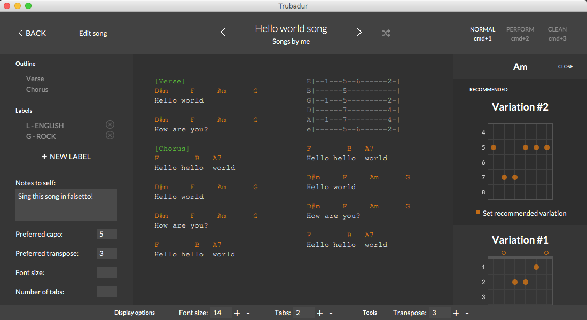
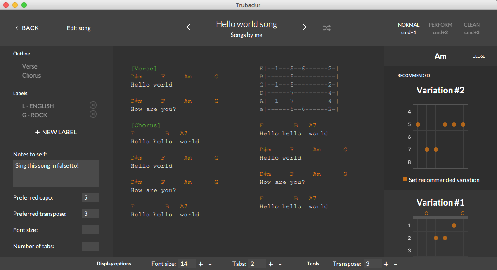

Trubadur App
An Open Source and FREE software for editing your lyrics and guitar chords/tabs. Created for musicians and performers for a good desktop, mobile and tablet experience.
Here are some examples of what you can do with the application:


 

 Download trubadur
Download trubadur